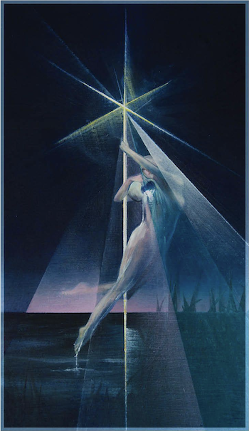

I look up at the ancient night,
Where distant stars burn clear and high,
And find within my quiet chest.
The same bright spark that lights the sky.
We are composed of stardust spun,
A living piece of cosmic grace,
Reflecting back the universeFrom this small,
breathing human place.
go back
